This report walks through an analysis of a subset of the machines data from the rrcov package (rows hp-3000/64 to ibm-4331-2).
1.1 Objectives of the study
Describe the variables using classical and robust summaries, Mahalanobis distances and graphical tools, and comment on the main patterns in the data.
Apply PCA on the original and standardized scales, compare the proportion of explained variance and interpret the retained components (keeping at least 95% of total variance).
Introduce a single atypical observation and compare the impact on classical PCA versus a robust PCA based on the MCD estimate.
2 Study plan (at a glance)
Inspect the data: structure, variable meaning, rough scales.
Classical and robust summaries to see skew/tails and dependence (covariance, distances).
PCA on raw vs standardized variables; compare variance explained and loadings; pick components reaching 95%.
Inject one outlier and compare classical vs robust PCA to illustrate sensitivity.
Conclude and state a recommendation for which PCA to report and why.
3 Setup and data
Code
# install.packages(c("rrcov", "robustbase"), repos = "https://cloud.r-project.org") # install if missinglibrary(rrcov) # robust multivariate methods (PCA, covariance)library(robustbase) # robust basics (MCD, etc.)data(machines) # load the machines datasetmachines_sub <- machines[71:111, ] # slice rows hp-3000/64 ... ibm-4331-2machines_sub$machine <-rownames(machines_sub) # store machine names for labelingrownames(machines_sub) <-NULL# drop row names to avoid confusionn_obs <-nrow(machines_sub) # count observationsn_vars <-ncol(machines_sub) -1# count numeric variables (exclude machine names)head(machines_sub, 3) # peek at the first rows
Code
# summarize each variable (min/mean/median/max/quartiles)summary(machines_sub)
MYCT MMIN MMAX CACH
Min. : 26.0 Min. : 96 Min. : 512 Min. : 0.00
1st Qu.: 140.0 1st Qu.: 768 1st Qu.: 3000 1st Qu.: 0.00
Median : 300.0 Median : 1000 Median : 4000 Median : 4.00
Mean : 322.7 Mean : 2435 Mean : 9812 Mean :10.41
3rd Qu.: 330.0 3rd Qu.: 2000 3rd Qu.:12000 3rd Qu.: 8.00
Max. :1100.0 Max. :16000 Max. :32000 Max. :64.00
CHMIN CHMAX PRP ERP
Min. : 1.000 Min. : 1.00 Min. : 6 Min. : 15.00
1st Qu.: 1.000 1st Qu.: 2.00 1st Qu.: 22 1st Qu.: 23.00
Median : 1.000 Median : 20.00 Median : 38 Median : 30.00
Mean : 3.171 Mean : 20.39 Mean : 80 Mean : 69.34
3rd Qu.: 4.000 3rd Qu.: 24.00 3rd Qu.: 66 3rd Qu.: 57.00
Max. :16.000 Max. :112.00 Max. :465 Max. :361.00
machine
Length:41
Class :character
Mode :character
4 Data description
Observations: 41 machines; numeric variables: 8.
Variables (all numeric):
MYCT cycle time (ns), MMIN min memory (KB), MMAX max memory (KB), CACH cache (KB),
CHMIN min channels, CHMAX max channels, PRP published perf, ERP estimated perf.
Machine IDs live in machine (formerly row names). Use them for labels, not for analysis.
Historically, these data come from the Computer Hardware dataset describing mainframe computers from the 1970s–1980s. Each row corresponds to a specific machine model, with hardware specifications (cycle time, memory, cache, number of I/O channels) and two performance measures. The variables CHMIN and CHMAX denote the minimum and maximum number of I/O channels the system can be configured with, so they reflect scalability for small versus large installations.
To make the variables more concrete, consider two machines in our subset:
hp-3000/iii has MYCT = 175 ns (slower CPU), MMIN = 256 KB and MMAX = 2000 KB of memory, no cache and between 3 and 24 channels (CHMIN = 3, CHMAX = 24), with published performance PRP = 22. This is a relatively modest system in both memory and performance.
ibm-3081 has MYCT = 26 ns (much faster), MMIN = 16000 KB and MMAX = 32000 KB of memory, cache CACH = 64, between 16 and 24 channels, and PRP = 465. It represents a high-end configuration with far greater memory and throughput capability.
These contrasts illustrate how larger memory, more channels and lower cycle time are associated with higher performance measures, which is precisely the multivariate relationship we summarise with PCA in later sections.
Before any formal analysis, these hardware considerations give us clear prior expectations: we anticipate a strong negative association between MYCT and the performance variables, and positive associations between MMIN, MMAX, CACH, the channel counts and PRP/ERP. We also expect PRP and ERP to be highly correlated, since both are measuring the same underlying notion of computing power. In terms of PCA, a natural prior is that the leading standardized component will reflect an overall “size/performance” level combining memory, cache and performance, while a secondary component may capture differences in channel configuration relative to speed.
Quick look at the machine names:
Code
head(machines_sub$machine, 5) # show first few machine IDs
From this table we can see, for each variable, how sensitive the mean is to extreme values by comparing it with the median, the trimmed mean and the winsorized mean. Large differences between the mean and the robust summaries indicate asymmetric or heavy-tailed behaviour. The MAD column complements the standard deviation by providing a scale measure that is less influenced by atypical machines.
5.2 Covariance, total and generalized variance
These give a sense of joint spread; generalized variance is the log-determinant (stable on the log scale).
Note: the squared Mahalanobis distance is approximately chi-square with p degrees of freedom (p = number of numeric variables). Using the 97.5th percentile cutoff marks points that are unusually far from the multivariate center (potential joint outliers).
Code
md_classic <-mahalanobis( num_vars, # data matrixcenter =colMeans(num_vars), # classic mean vectorcov = S_classic # classic covariance matrix)cutoff <-qchisq(0.975, df =ncol(num_vars)) # 97.5% chi-square threshold# Robust (MCD) Mahalanobis distancescmcd <- robustbase::covMcd(num_vars) # robust center/covariance via MCDmd_robust <-mahalanobis( num_vars, # data matrixcenter = cmcd$center, # robust centercov = cmcd$cov # robust covariance)par(mfrow =c(1, 2)) # two plots side by sideplot(md_classic, pch =19, main ="Mahalanobis (classic)", ylab ="Distance") # classic distancesabline(h = cutoff, col ="red", lty =2) # cutoff lineplot(md_robust, pch =19, main ="Mahalanobis (robust MCD)", ylab ="Distance") # robust distancesabline(h = cutoff, col ="red", lty =2) # cutoff line
Interpretation: both classic and robust distances keep most machines below the 97.5% cutoff (≈17.5), showing a fairly homogeneous core of machines around a single multivariate centre. A smaller group lies above the cutoff in at least one of the two metrics; these correspond to atypical combinations of cycle time, memory, cache and channels. The robust MCD distances sometimes flag a slightly different set because they estimate centre and scatter after downweighting potential outliers, which is desirable when searching for systematically atypical configurations.
5.3.1 Who is flagged and which variables drive them?
Code
flagged_ids <-unique(c(flag_classic, flag_robust)) # union of flagged indicescenter_c <-colMeans(num_vars) # classic centerscale_c <-sqrt(diag(S_classic)) # classic scales (SDs)center_r <- cmcd$center # robust centerscale_r <-sqrt(diag(cmcd$cov)) # robust scales (SDs)# Approximate per-variable contributions: squared standardized deviations (ignores correlation structure)contrib_mat_classic <-t(apply(num_vars[flagged_ids, ], 1, function(x) ((x - center_c) / scale_c)^2))contrib_mat_robust <-t(apply(num_vars[flagged_ids, ], 1, function(x) ((x - center_r) / scale_r)^2))rownames(contrib_mat_classic) <- machines_sub$machine[flagged_ids] # label rowsrownames(contrib_mat_robust) <- machines_sub$machine[flagged_ids]for (i inseq_along(flagged_ids)) { # loop each flagged machine mid <- machines_sub$machine[flagged_ids[i]] # machine name op <-par(mfrow =c(1, 2), mar =c(4, 4, 2, 1)) # two barplots side by sidebarplot(contrib_mat_classic[i, ], main =paste(mid, "\nclassic z^2"), las =2, cex.names =0.7, ylab ="contrib") # classic contributionsbarplot(contrib_mat_robust[i, ], main =paste(mid, "\nrobust z^2"), las =2, cex.names =0.7, ylab ="contrib") # robust contributionspar(op) # reset par}
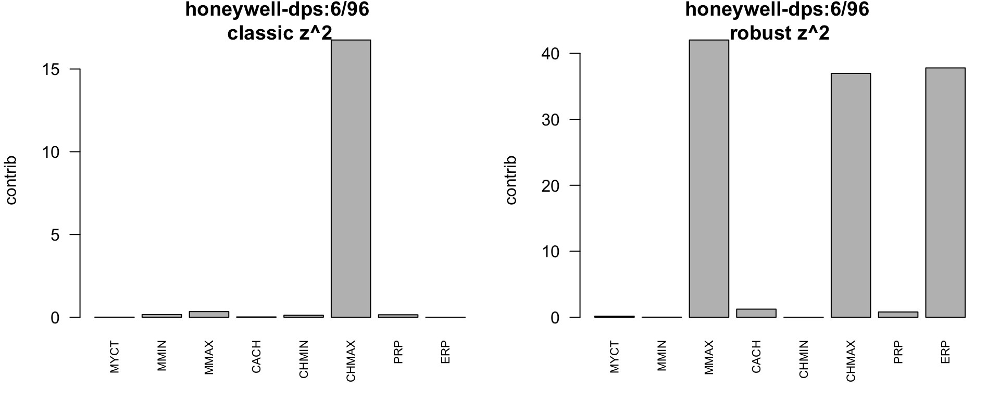
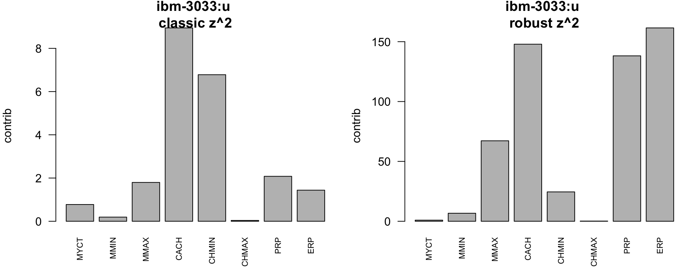
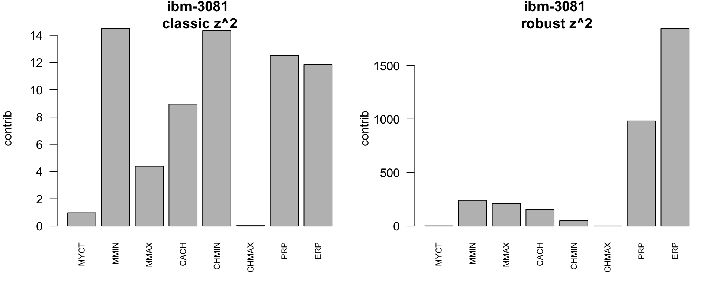
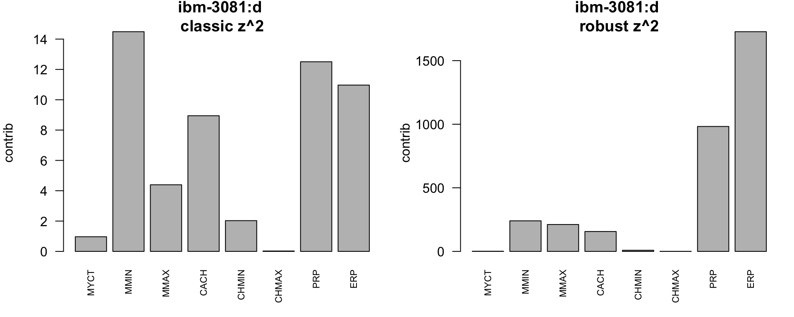
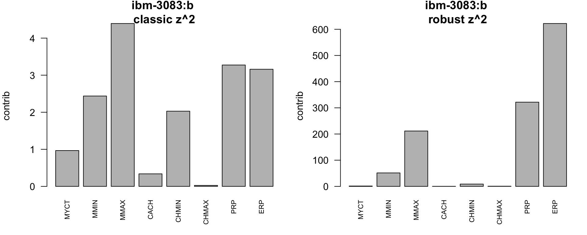
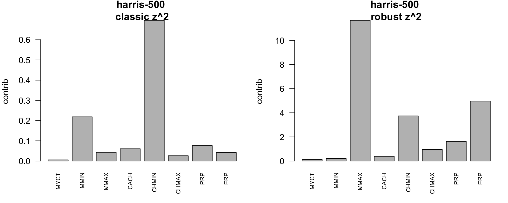
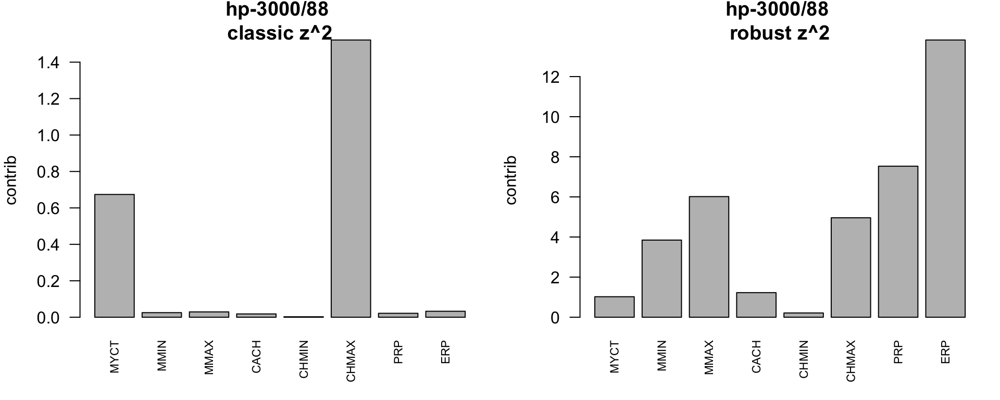
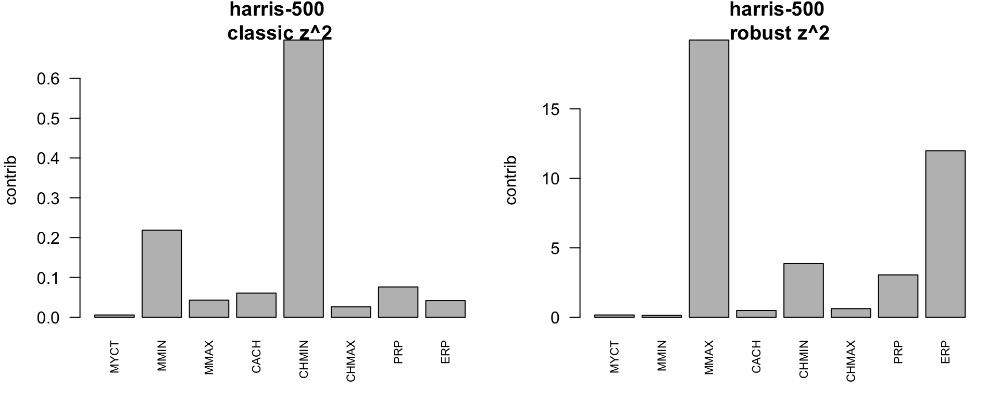
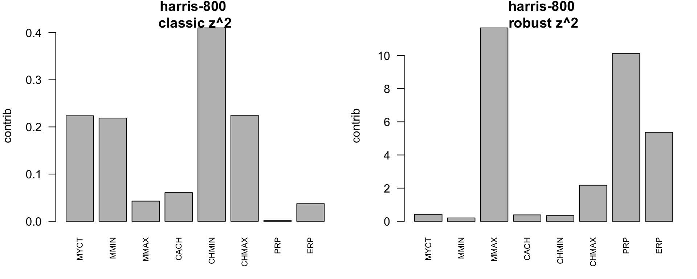
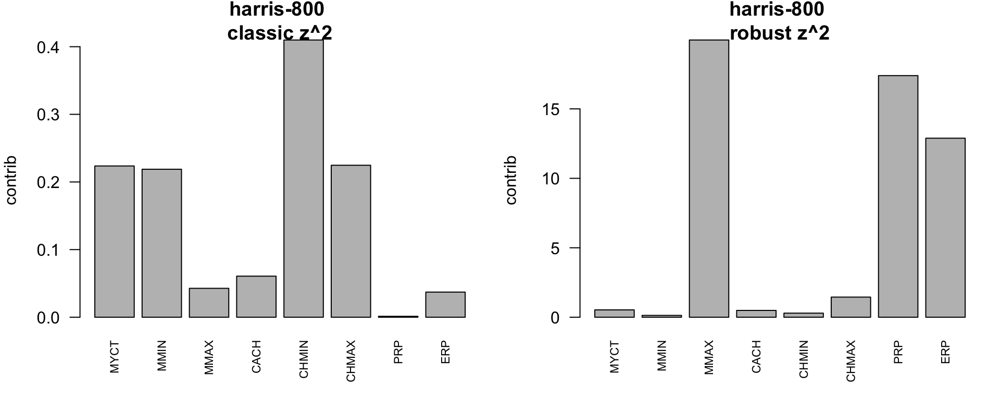
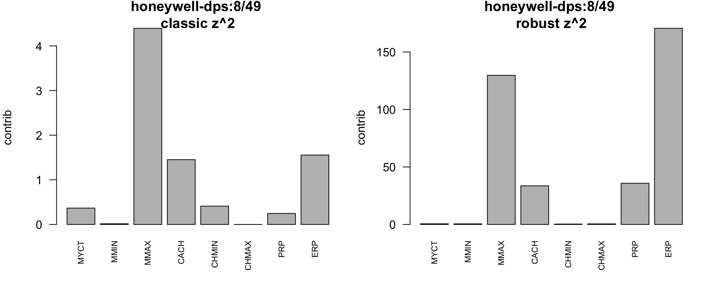
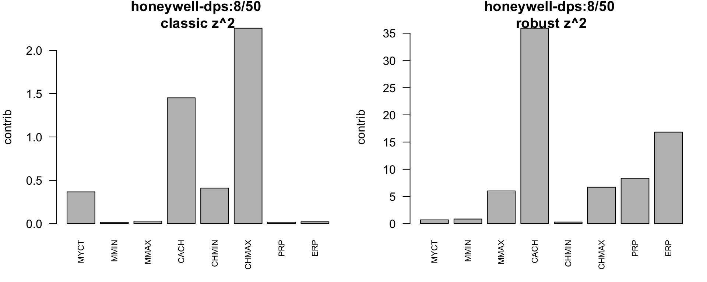
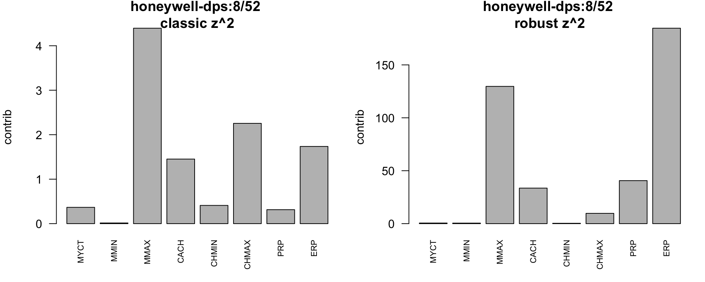
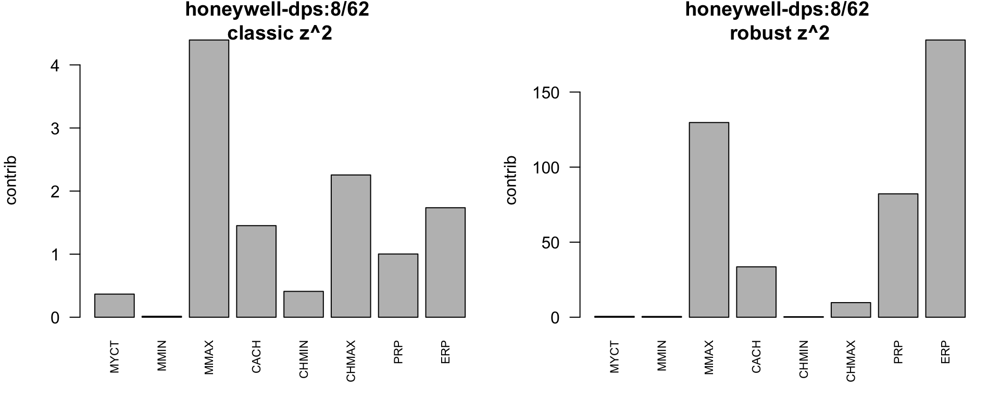
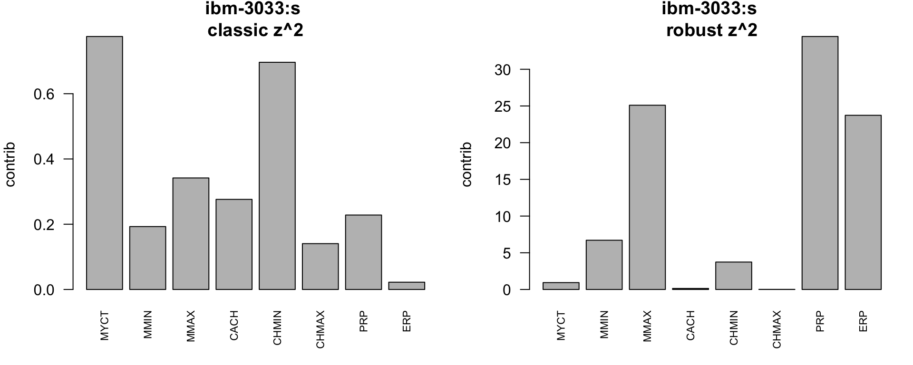
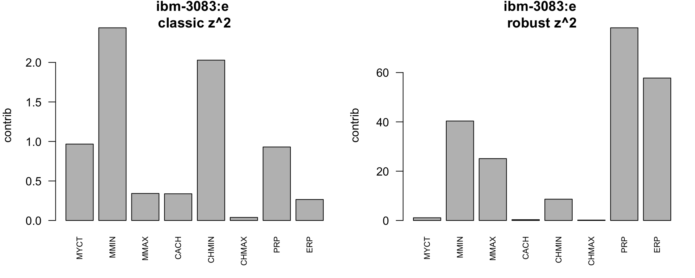
Interpretation guide: - These barplots show which variables have the largest squared standardized deviations for each flagged machine (left: classical center/scale; right: robust center/scale). - Large bars point to the specs driving the outlying Mahalanobis distance (e.g., unusually high memory, channels, or performance). - Robust scaling tempers the influence of the bulk; if a bar stays large in both panels, that variable is a consistent driver of atypicality.
Friendly readout of three examples:
Code
examples <-c("honeywell-dps:6/96", "ibm-3081", "honeywell-dps:8/49") # pick 3 machinesget_top <-function(mat, id, k =3) { # helper to grab top k contributionsif (!id %in%rownames(mat)) return(NA) # handle missingsort(mat[id, ], decreasing =TRUE)[1:k] # largest k entries}example_top <-lapply(examples, function(id) { # build list for each examplelist(machine = id, # machine nameclassic_top =round(get_top(contrib_mat_classic, id), 2), # top classic contributorsrobust_top =round(get_top(contrib_mat_robust, id), 2) # top robust contributors )})example_top # show the list
honeywell-dps:6/96: dominated by very high CHMAX (channels), with moderate influence from MMAX and ERP in the robust view.
ibm-3081: extreme across memory (MMIN, MMAX), cache, and performance (PRP, ERP), especially in the robust scaling where these dwarfish deviations inflate the distance.
honeywell-dps:8/49: stands out for large MMAX and CACH, coupled with higher PRP/ERP relative to the robust center.
5.4 Summary of the preliminary analysis
Overall, the subset contains 41 machines with heterogeneous hardware characteristics (MMIN, MMAX, CACH, channel counts and performance metrics). The comparison between mean, median, trimmed and winsorized means, together with the MAD values, highlights variables where the bulk of the data is concentrated but a few machines deviate substantially from the main group. The covariance matrix and Mahalanobis distances confirm this picture: most observations form a compact cloud near a common centre, while a small number of models, such as honeywell-dps:6/96, ibm-3081 and honeywell-dps:8/49, display unusually large memory, cache and performance values and are flagged as multivariate outliers.
This preliminary step already suggests a dominant “size/performance” gradient in the data, ranging from modest systems to high-end machines. This motivates the use of PCA in the next section to summarise that multivariate structure with a reduced number of components while retaining most of the total variance.
6 Principal Component Analysis (original vs standardized)
We compare PCA on raw scales (keeps original units) vs standardized (puts variables on equal footing).
Code
pca_raw <-prcomp(num_vars, center =TRUE, scale. =FALSE) # PCA on raw scalepca_std <-prcomp(num_vars, center =TRUE, scale. =TRUE) # PCA on standardized data# ensure numeric to avoid class quirks on sdevsdev_raw <-as.numeric(pca_raw$sdev) # SDs of PCs (raw)sdev_std <-as.numeric(pca_std$sdev) # SDs of PCs (std)pve_raw <- sdev_raw^2/sum(sdev_raw^2) # proportion variance explained (raw)pve_std <- sdev_std^2/sum(sdev_std^2) # proportion variance explained (std)
6.1 Scree plots and variance explained
Red line marks 95% cumulative variance target.
Code
par(mfrow =c(1, 2)) # side-by-side scree plotsplot(pve_raw *100, type ="b", pch =19, xlab ="PC", ylab ="% variance",main ="Raw scale") # raw PVElines(cumsum(pve_raw) *100, type ="b", col ="blue") # cumulative PVE (raw)abline(h =95, col ="red", lty =2) # 95% lineplot(pve_std *100, type ="b", pch =19, xlab ="PC", ylab ="% variance",main ="Standardized") # standardized PVElines(cumsum(pve_std) *100, type ="b", col ="blue") # cumulative PVE (std)abline(h =95, col ="red", lty =2) # 95% line
Code
par(mfrow =c(1, 1)) # reset layout
Code
k_raw <-which(cumsum(pve_raw) >=0.95)[1] # PCs needed (raw) for 95%k_std <-which(cumsum(pve_std) >=0.95)[1] # PCs needed (std) for 95%data.frame(scale =c("raw", "standardized"), # scale typepcs_needed_for_95pct =c(k_raw, k_std), # count of PCs to reach 95%cumulative_variance =c(cumsum(pve_raw)[k_raw], cumsum(pve_std)[k_std]) # achieved cum PVE) # show summary
Interpretation: - Raw-scale PCA reaches ≥95% variance with 2 components; standardized PCA does so with 5. Because variables are on different units (ns vs KB vs counts vs performance), the standardized solution is the safer, more interpretable default. - The first standardized PC loads heavily (in magnitude) on memory and performance (MMAX, MMIN, PRP, ERP, plus CACH), so it summarizes overall “capacity/performance.” PC2 contrasts channel capacity (CHMAX) against cycle time and minimum channels, hinting at an I/O vs speed axis. - In other words, most of the multivariate variability can be compressed into the first few standardized components: with only 5 PCs we already achieve at least 95% of the total variance, which is a substantial reduction from the original 8 dimensions. - Recommendation: for dimension reduction we report the standardized PCA and retain the first 5 components (≥95% variance), interpreting PC1 as a scale of overall performance/memory and PC2 as a channels vs speed dimension; the remaining retained PCs mostly capture finer contrasts between already powerful machines.
6.2 Loadings and interpretation aids
Inspect which variables drive the first PCs (signs may flip without changing interpretation).
Code
head(pca_raw$rotation[, 1:min(3, ncol(num_vars))]) # raw loadings (first PCs)
top_loadings <-function(rot, pcs =1:2, k =3) { # helper to grab top loadingsdo.call(rbind, lapply(pcs, function(j) { # loop over PCs of interest ord <-order(abs(rot[, j]), decreasing =TRUE)[seq_len(k)] # top k by abs loadingdata.frame(PC =paste0("PC", j), # which PCvariable =rownames(rot)[ord], # variable nameloading =round(rot[ord, j], 3), # signed loadingabs_loading =round(abs(rot[ord, j]), 3) # absolute loading ) }))}top_std <-top_loadings(pca_std$rotation, pcs =1:2, k =4) # top 4 for std PCs 1-2top_raw <-top_loadings(pca_raw$rotation, pcs =1:2, k =4) # top 4 for raw PCs 1-2list( # bundle for printingtop_loadings_standardized = top_std, # report std top loadingstop_loadings_raw = top_raw # report raw top loadings)
Interpretation: the standardized score plot shows where machines align along the performance/memory axis (PC1) and the channels-vs-speed axis (PC2). Machines far to the right on PC1 have higher memory and performance ratings, whereas the vertical spread reflects different channel configurations relative to cycle time. Labels make it easy to relate extreme scores back to specific models when discussing results.
7 Outlier experiment
Introduce the atypical point at the former hp-3000/64 row (no standardization).
This table allows us to compare how the injected outlier redistributes the variance across components under the classical and robust approaches. In the classical PCA, the first eigenvalue typically inflates and captures a very large share of the variance because the outlier dominates the covariance structure. In contrast, the robust eigenvalues stay closer to what we observed without the outlier, meaning that the bulk geometry is preserved.
7.1 Visual comparison: scores
Outlier effect: in classical PCA, the first axis often aligns with the extreme point; robust PCA should stay closer to the bulk structure.
plot(pca_out_robust) # outlier map: orthogonal vs score distances
8 Decisions
For exploratory analysis we rely on classical summaries to describe central tendency and spread, but interpret them in parallel with robust statistics (trimmed and winsorized means, MAD and MCD-based Mahalanobis distances) to avoid being misled by a few extreme machines.
For dimension reduction we base our decision on the proportion of variance explained and interpretability of the loadings: we favour the standardized PCA and retain the first 5 principal components, which already explain at least 95% of the total variance in the eight numeric variables.
When a single atypical observation is present, we use robust PCA based on the MCD covariance estimate to describe the multivariate structure of the bulk of the data, and treat the classical PCA mainly as a diagnostic to illustrate the effect of the outlier.
9 Conclusions
The subset of machines data considered here exhibits a clear gradient from low to high capability systems, mainly driven by memory size, cache and performance measures. The preliminary analysis using classical and robust summaries, together with Mahalanobis distances, shows that most machines cluster around a central configuration while a small number of high-end models stand out as multivariate outliers.
Standardized PCA provides an effective summary of this structure: with only 5 components we retain at least 95% of the total variance and obtain interpretable directions, where the first component captures an overall performance/memory level and the second contrasts channel capacity with speed. Plotting the scores on these components reveals how specific named machines occupy different regions of the performance–channels trade-off.
After injecting the artificial outlier, classical PCA becomes strongly influenced by this single observation, reallocating a large share of variance to the first component and distorting the geometry of the remaining points. In contrast, the MCD-based robust PCA keeps the eigenvalues and loading patterns closer to the original analysis and clearly isolates the modified machine in the outlier map. This comparison illustrates the vulnerability of classical PCA to even one atypical observation and motivates the use of robust methods when data contamination is plausible.
10 Bibliography
Jolliffe, I. T. (2002). Principal Component Analysis. Springer.
Todorov, V., & Filzmoser, P. (2009). An object oriented framework for robust multivariate analysis. Journal of Statistical Software, 32(3), 1–47. ***